地政学
ナジャフはバグダード、カルバラー、クーファ、湾岸方面を結ぶイラク中南部の宗教都市です。聖廟と宗教権威の発言は国内政治、宗派関係、地域外交に響き、県都行政も慎重な調整を担います。道と信仰が権威を運びます。
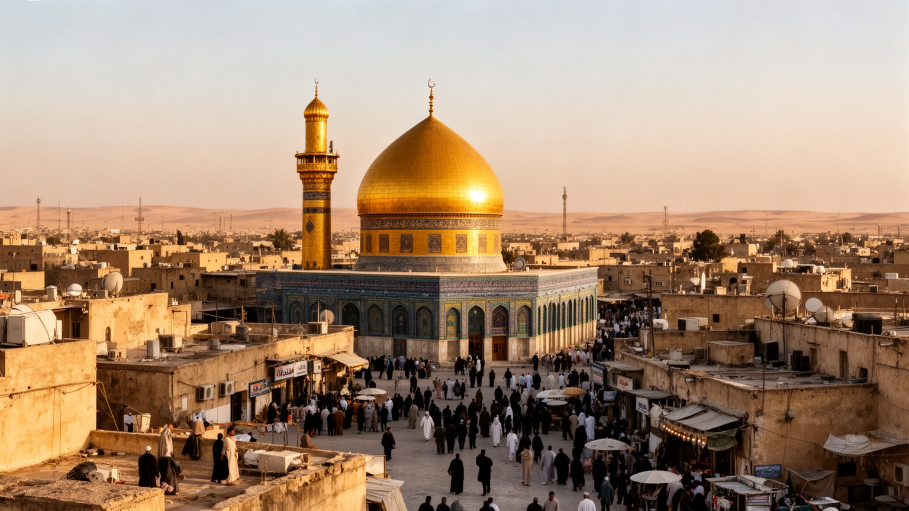
🇮🇶 イラク / ナジャフ県 / World City Atlas
イマーム・アリー廟、ハウザ、ワーディー・アッサラーム墓地、旧市街、市場、巡礼交通が、死者の記憶と生者の仕事を結びつけるシーア派イスラムの精神都市です。
都市の骨格
ナジャフは巡礼地であるだけでなく、宗教法学、出版、墓地、家族の記憶、政治的発言が都市空間の中で結びつきます。聖なる中心の周囲で、宿泊、交通、小商い、住宅、暑熱への備えが毎日動いています。
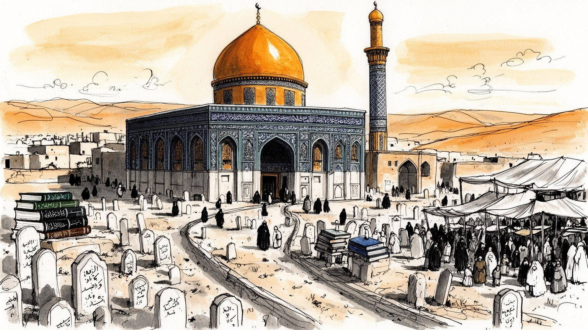
ナジャフはバグダード、カルバラー、クーファ、湾岸方面を結ぶイラク中南部の宗教都市です。聖廟と宗教権威の発言は国内政治、宗派関係、地域外交に響き、県都行政も慎重な調整を担います。道と信仰が権威を運びます。
経済は巡礼宿泊、食堂、小売、出版、宗教教育、交通、墓地管理、建設、清掃に支えられます。繁忙期は仕事を広げる一方、暑熱、長時間労働、季節収入、家賃上昇が家計を揺らします。小商いの粘りも都市の基礎になる街です。
イマーム・アリー廟、ハウザ、説教、法学、詩、追悼儀礼、墓参が都市の文化を形づくります。信仰は観光資源ではなく、家族の死者、学び、政治倫理、日々の礼拝を結ぶ生活の枠組みでもあります。声と書物も街を作る力です。
住民は聖地に近い誇りを持ちながら、混雑、検問、暑さ、住宅費、学校、病院、買い物を調整して暮らします。来訪者は聖廟と墓地を歩くが、仕事と日常の厚みを読む視点が欠かせません。市場も家族も旅程の外で続く街です。
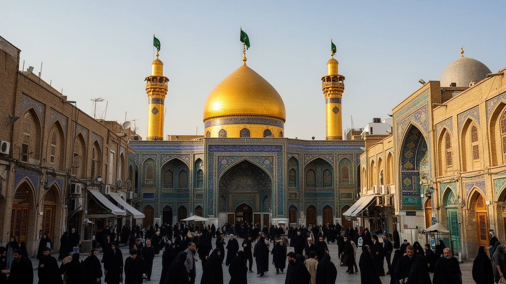
ナジャフの中心は、イマーム・アリー廟を囲む旧市街にあります。廟は信仰上の核心であるだけでなく、宿泊、商店、宗教学校、警備、歩行者動線、施食、家族の待ち合わせを引き寄せる都市の重心です。金色のドームを目指して人が集まると、周囲の路地には香料、布、数珠、宗教書、食堂、両替、茶店が並び、祈りの前後の実務を支えます。中心へ近いほど土地の価値は高く、巡礼向けの施設が増えるため、住民の日常の買い物や通学は迂回を求められることもあります。広場や動線の再整備は安全と収容力を高めるが、古い家並みや細い路地の記憶を薄める面もあります。ナジャフを読むには、聖廟の荘厳さと、その周囲で水を運び、店を開け、掃除し、群衆を誘導する人びとの働きを同時に見る必要があります。聖なる中心は都市を照らすだけでなく、土地利用、労働、生活の速度を強く組み替えます。早朝の参拝、昼の商い、夜の清掃が繰り返されることで、聖なる空間は一日の生活時間へ細かく分けられます。聖廟近くの再開発では、消防や救急の余地、車いすでの移動、女性や高齢者の休憩、住民の通路をどう確保するかも問われます。都市の中心は祈りの場所であると同時に、混雑を管理し、暮らしを途切れさせない公共空間でもあります。古い扉や道の名を残すことも、巡礼都市の記憶を守る実務になります。小さな路地も聖地の歴史を語ります。
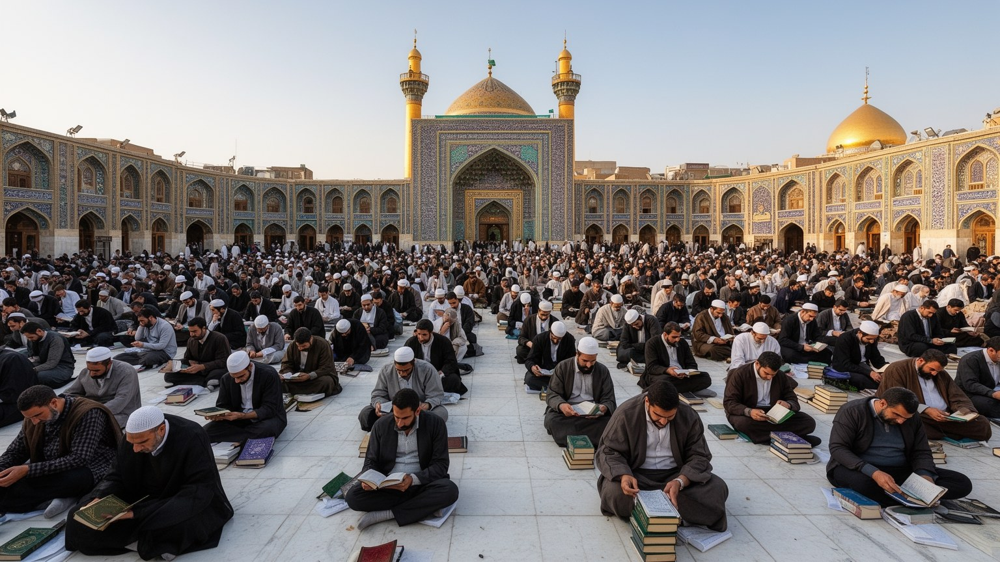
ナジャフのハウザは、シーア派イスラムの宗教知を支える代表的な学問圏です。学生は法学、神学、アラビア語、解釈学、倫理、説教を学び、師と弟子の関係、討論、写本、出版、図書館、寄宿の生活を通じて知識を身につけます。学びは校舎だけで完結せず、廟の周辺、書店、食堂、宿、家庭、追悼集会へ広がります。ナジャフの宗教権威は、政治的権力を直接握るのではなく、信徒からの信頼、法的判断、慈善、教育、道徳的発言によって影響力を持ちます。学生の出身地はイラクに限らず、イラン、湾岸、南アジア、アフリカなどへ広がり、ナジャフで学んだ人が各地の共同体へ戻ることで都市の声は外へ運ばれます。一方で、若い学徒の生活は豊かとは限らず、家賃、食費、言語、身分、政治的緊張に向き合います。ハウザを読むことは、聖地の静かな学問が家庭の倫理、地域社会の相談、世界の宗教ネットワークへどうつながるかを見ることです。貧困、移民、暴力、環境、家族の変化にどう答えるかが、宗教知の信頼を試しています。書店の棚、古い注釈、夜の講義、師の家を訪ねる学生の歩みは、都市の知的な風景をつくります。知識は権威そのものではなく、日々の討論と相談を受け止める信頼の積み重ねで保たれます。学徒の生活を支える安い食堂や寄宿の部屋も、学問都市の基礎です。静かな読書の場も街を支えています。
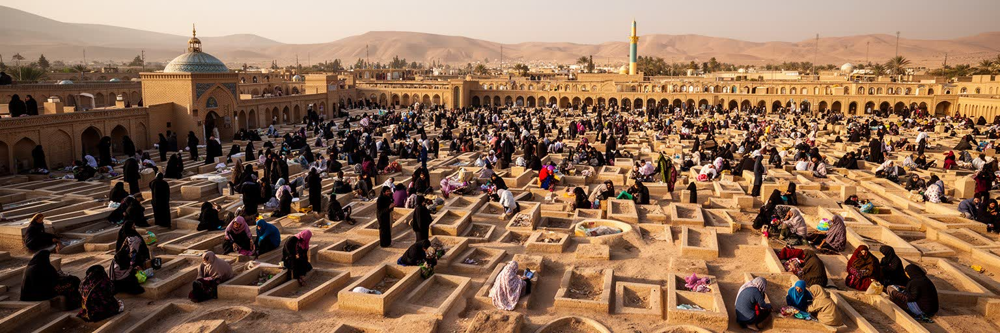
ナジャフの都市像を特異にしているのが、ワーディー・アッサラーム墓地です。広大な墓地は単なる埋葬地ではなく、家族の記憶、宗教的希望、石工、墓守、運送、清掃、祈祷、訪問の経済を含むもう一つの都市です。イマーム・アリーの近くに眠りたいという願いは、イラク各地や国外の家族をナジャフへ結びつけます。墓参の人びとは死者の名を読み、花や水を置き、祈り、親族の歴史を子どもへ語ります。墓地の広がりは圧倒的ですが、そこには細い道、区画、石材店、案内人、葬送の車、休憩する家族があり、死をめぐる感情が都市の仕事と交差します。戦争や暴力の時代には、墓地は社会の傷を可視化する場所にもなりました。死者が多いことは宗教的な名誉だけではなく、国家の苦難、家族の喪失、若者の不在を示します。墓地を景観として眺めるだけでは足りません。埋葬を手配する家族、墓を刻む職人、炎暑の中で墓参を支える人の働きを見ることで、生者と死者が同じ都市を共有していることが分かります。墓地の維持には水、道路、廃棄物処理、安全管理も必要で、信仰は都市インフラと切り離せません。墓標の列を歩く体験は、家族史と国家史が同じ地面に折り重なることを教えます。死者を迎え続ける都市では、悲しみも祈りも、墓地へ向かう交通や日陰の整備と結びついています。墓地の沈黙は、家族を支える多くの手仕事の上に成り立ちます。
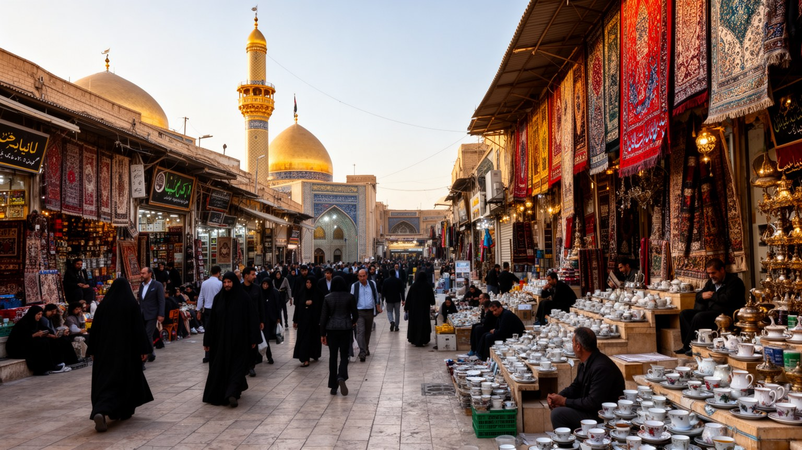
ナジャフの経済は、聖廟へ向かう人の流れを日々の仕事へ変えることで成り立ちます。宿泊施設、食堂、茶店、土産物、宗教書、衣類、香料、交通、両替、通信、清掃、警備、墓地関連の仕事が、旧市街から郊外まで雇用を広げます。繁忙期には臨時の店員、運転手、料理人、清掃員、荷運び、案内人が増え、家族経営の小さな店も長時間開きます。巡礼者の消費は信仰と結びつくため、商品には記念品としての意味や施食の実用品としての意味が重なります。一方で、収入は治安、季節、国境管理、為替、宿泊価格に左右されやすいです。中心部の地価が上がると、古い店や低所得の住民は押し出されます。労働者は暑熱と混雑の中で働き、宗教都市の敬虔な雰囲気の背後で疲労を抱えます。小商いを読むには、巡礼者に見えるにぎわいだけでなく、仕入れ、家賃、家族労働、借金、価格交渉、清掃費まで含めて見る必要があります。信仰は人を集めるが、その集まりを毎日食べさせ、泊め、帰路へ送り出すのは多数の働き手です。女性の家内労働や親族内の無償の手伝いも、表に出にくい経済の一部として街を支えます。若者が巡礼期だけの収入に頼らず、技能や教育を通じて持続的な仕事を得られるかも重要です。市場の活気は都市の誇りであると同時に、社会保障や安定雇用の弱さを映す鏡にもなります。価格をめぐる交渉や信用売りも、巡礼都市の日常経済を細かく支えます。
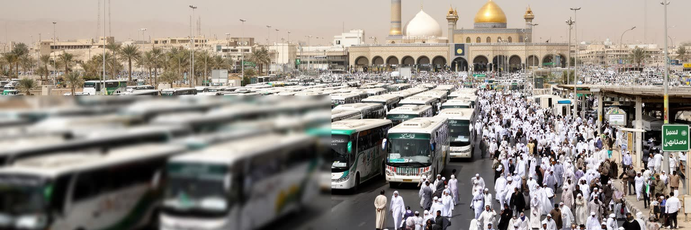
ナジャフは内陸都市ですが、孤立した聖地ではありません。バグダード、カルバラー、クーファ、ヒッラ、バスラ、イラン国境方面へ向かう道路、そしてナジャフ国際空港が、巡礼者、学生、商人、家族、遺体搬送、宗教関係者を結びつけます。空港は湾岸、イラン、南アジアなどからの来訪を受け止め、都市経済の入口になります。道路ではバス、タクシー、乗合車、貨物車、巡礼期の徒歩の列が重なり、検問、駐車場、休憩所、給水、医療、清掃が必要になります。交通は単なる移動手段ではなく、聖地の開放性を決めるインフラです。国境や治安の変化があると、ホテルの稼働、商店の売上、学校の学生数、墓参の予定まで影響を受けます。大規模巡礼の時期には、群衆を中心部へ入れすぎず、帰路を確保する計画が欠かせません。広域性は、聖廟前の広場だけでなく、空港の到着ロビー、バスターミナル、郊外道路、検問所、沿道の茶店にも表れます。遠方から来る人が迷わず、危険なく、尊厳を保って移動できるかは、都市の宗教的役割を実務として支える条件です。道は信仰の線であり、都市運営の試験でもあります。交通の改善は経済を広げるが、車の増加、排気、渋滞、歩行者の危険も生みます。帰路の案内、女性や高齢者の休憩、夜間照明まで整う時、聖地は広域から来る人を本当に迎え入れられます。空港と聖廟を結ぶ移動の質は、到着した瞬間の印象を決めます。
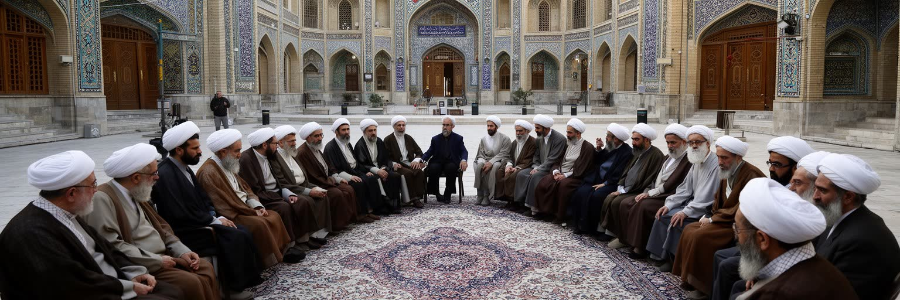
ナジャフの政治的重要性は、首都機能や軍事力からではなく、宗教権威の言葉と社会的信頼から生まれます。イラクの近現代史では、王政、共和国、独裁、戦争、制裁、占領、宗派暴力、国家再建の局面で、ナジャフの宗教指導者や学問圏が人びとの判断に影響を与えてきました。直接統治を目指す立場とは距離を置きつつ、選挙参加、暴力の抑制、国民統合、腐敗批判、抗議運動への姿勢などで発言が注目されます。こうした影響力は、国家制度が不安定な時ほど大きくなりますが、政治に近づきすぎれば宗教的信頼を損なう危険もあります。ナジャフでは、聖廟、ハウザ、事務所、慈善組織、部族、政党、市民運動、商人が複雑に交差し、誰の声が社会を動かすのかは単純ではありません。都市を政治の舞台として見る時、宗派対立だけに還元すると実態を見誤ります。そこには国家の暴力を抑えたい願い、腐敗への怒り、若者の雇用不安、公共サービスの不足、犠牲者を悼む記憶が重なります。宗教権威は、沈黙することも発言することも政治的意味を持ちます。説教の言葉が家庭や投票所、市民の議論へどう届くかに、この都市の力が表れます。外部勢力への警戒と国内の和解を両立させる難しさも、この都市の発言を重くします。慎重な距離感こそが影響力の源になり、政治の熱を抑える技術にもなります。だからナジャフの政治性は、声高な権力よりも、信頼を失わずに社会へ届く言葉の重さにあります。
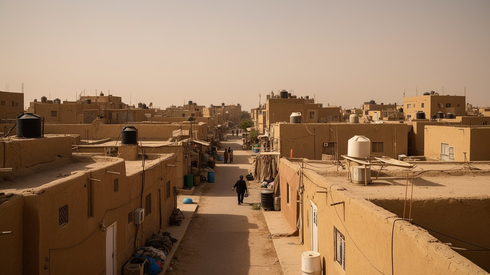
ナジャフは世界の巡礼者に向けた都市である前に、学校、診療所、住宅、親族関係、近所の店、通勤、結婚式、葬儀を持つ住民の都市です。聖廟に近い地区では商業機会が大きい一方、家賃、混雑、騒音、検問、観光客向け価格が生活を圧迫します。郊外では住宅地が広がり、若い世代は教育、就職、娯楽、公共交通の選択肢を求めます。女性、子ども、高齢者にとっては、歩きやすい道、近くの医療、日陰、安心して使える交通、学校への安全な通学路が生活の質を左右します。巡礼期には家族が親族や来訪者を迎え、食事や寝場所を調整することもあります。もてなしは誇りである一方、時間と費用を伴います。住民は聖地の名誉を共有しながら、都市が常に外からの需要で動くことに疲れることもあります。住む場所として読むと、聖廟や墓地の大きな物語の周囲に、家計、教育、病院、休息、近隣の助け合いという地味ですが不可欠な課題が見えます。夕方の買い物、学校帰りの子ども、医師への相談、近所の茶の時間は、宗教都市の重い象徴とは別の速度で続きます。巡礼者を迎える力も、住民の日常が疲弊しすぎない時に長く続きます。若者が安心して学び、働き、家族を持てるかは、聖地の威信とは別の現実的な課題です。近所の静けさや夜に涼める空間も、都市の財産として守られる必要があります。暑い季節の停電や水圧の低下は、住宅の質をそのまま生活の安全へ変えます。
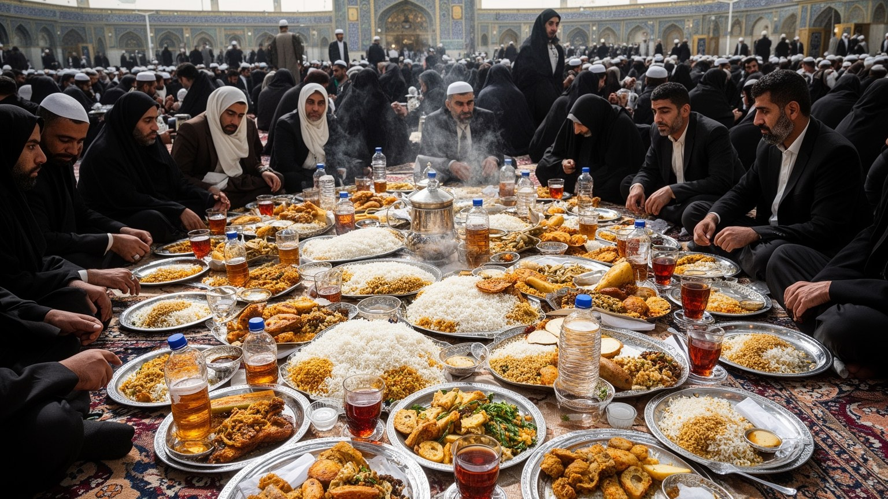
ナジャフの文化は、聖廟の祈りだけでなく、詩、説教、書物、食、もてなし、墓参、家族の語りに宿ります。宗教行事では朗唱者の声が記憶を運び、施食は信仰を具体的な行為へ変えます。大鍋の料理、茶、菓子、ナツメヤシ、米料理、香辛料は、疲れた巡礼者を迎えるだけでなく、地域の家族や商人の誇りも示します。書店には法学書、祈祷書、詩集、歴史書が並び、学問都市としての厚みを路上に見せます。市場では宗教用品と日用品が同じ通りで交差し、住民の買い物と巡礼者の記念品選びが重なります。文化は美しい伝統として語られやすいが、実際には調理、買い出し、配膳、片付け、店番、印刷、製本、価格交渉という労働に支えられています。もてなしは美徳であり、同時に費用と疲労を伴う社会的義務でもあります。声と食を読むと、宗教的な記憶が味、匂い、節回し、紙の手触りを通じて身体に残ることが分かります。夜の集会で交わされる言葉や、店先で本を選ぶ学生の姿も、街の文化を静かに支えます。文化は舞台上の儀礼だけでなく、手渡される杯や本の余白にも宿っています。味と声と文字が重なることで、記憶は日常の中へ戻っていきます。観光として消費するだけでは、この生活文化の重みは見えにくいです。茶を受け取る時間、食後に交わす短い会話、店主が本を選ぶ助言も、巡礼者を一時的な客から共同体の一部へ近づける余白になります。
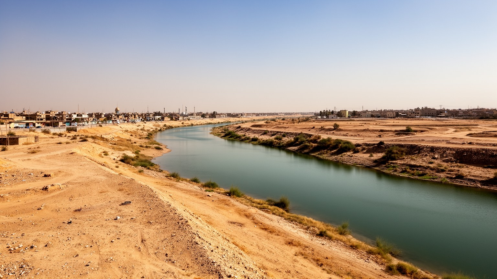
ナジャフの気候は、都市の暮らしと巡礼の安全を直接左右します。夏の暑さは厳しく、屋外で働く店員、清掃員、警備員、運転手、墓地を歩く家族、高齢の巡礼者、子どもにとって熱中症の危険が高いです。日陰、給水、休憩所、冷房、救急体制は、宗教行為を安全に続けるための基本インフラです。雨は少ないが、短時間の降雨や排水不備は道路を混乱させ、乾燥と砂塵は健康、商品、建物、機械に影響します。水の安定供給は住民の生活だけでなく、施食、宿泊、墓地管理、清掃、医療にも関わります。気候変動が暑さと水不足を強めれば、低所得層や古い住宅地、停電に弱い施設ほど負担が増します。冷房に頼るほど電力需要は大きくなり、停電時には宿泊施設や病院の脆さが表れます。聖地整備は美しい広場や大きなホテルだけでは足りません。涼める公共空間、歩ける日陰、清潔な水、公共トイレ、廃棄物処理、暑さに弱い人を想定した誘導が必要です。暑熱は信仰の強さで解決できる問題ではなく、都市計画と福祉の問題です。弱い人に合わせて設計された街路は、巡礼者にも住民にもやさしい聖地をつくります。墓地や市場で働く人には休憩の権利も必要で、暑さを自己責任にしない制度が求められます。日よけ、水場、救護所の配置は、祈りを守る都市の礼儀でもあります。乾いた風の中で体を守る工夫は、信仰都市の日常技術でもあります。
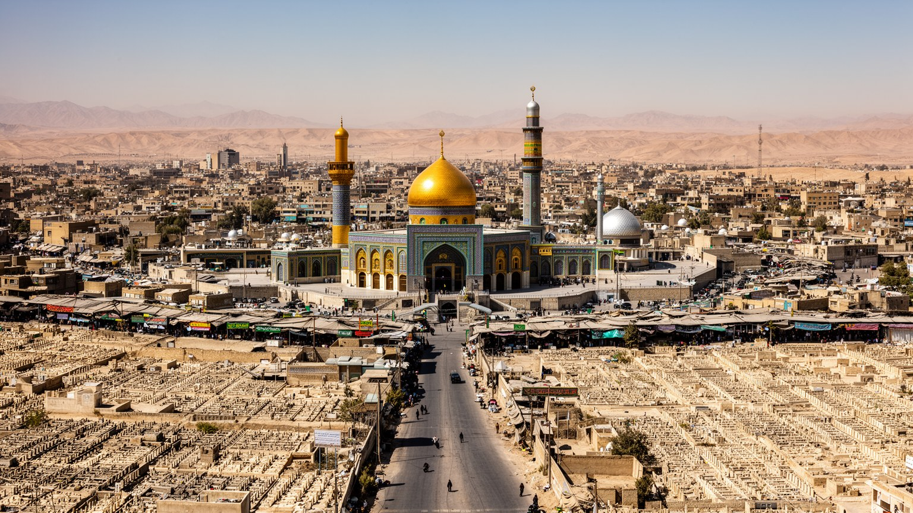
ナジャフを理解するには、イマーム・アリー廟の輝きだけでなく、ハウザ、書店、墓地、市場、空港、住宅地、検問、病院、郊外道路を一緒に見る必要があります。都市は聖地であり、学問の場であり、死者の記憶を抱く場所であり、同時に失業、暑熱、水、住宅費、若者の将来に向き合う生活都市でもあります。巡礼者は祈りの時間を求めて来るが、その滞在を支えるのは宿を掃除する人、食事を作る人、道を案内する人、墓を整える人、警備に立つ人、学校へ通う子どもを見守る家族です。宗教権威の発言は国内政治へ響き、墓地の広がりは戦争と喪失の歴史を映し、市場のにぎわいは信仰と不安定な労働を同時に示します。ナジャフはカルバラーと並ぶシーア派の核心都市ですが、殉教の記憶よりも学問と墓地の重みが強く、都市の時間は祈り、議論、埋葬、巡礼の反復で刻まれます。中心の荘厳さと周辺の日常、来訪者の感動と住民の負担、伝統の力と若者の変化を重ねて読むことで、ナジャフは単なる巡礼地ではなく現代イラクを映す都市として立ち上がります。聖地の力は、人が祈り、学び、死者を送り、また家へ戻るまでを支えられるかで測られます。外から来る人には荘厳な瞬間が残り、住む人には水道、学校、家賃、通勤の問題が残ります。両方を同時に見る時、ナジャフの重要性は数字ではなく都市を支える関係の厚みとして理解できります。